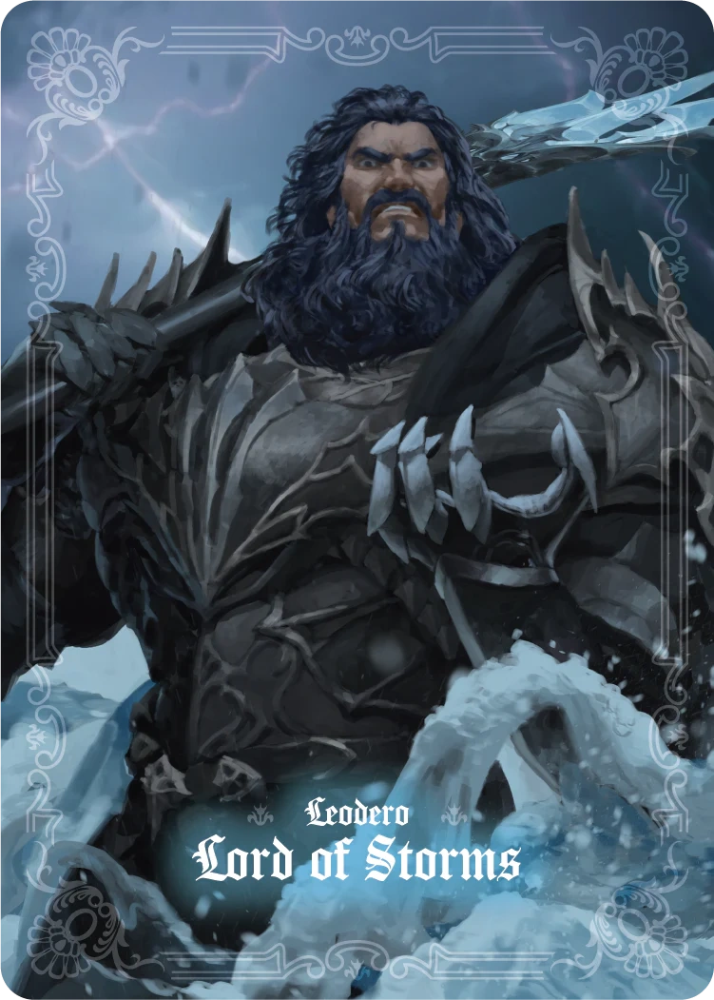

Overview
The Storm will not destroy itself! Nor will it surrender!
Lord of Storms, Book 2, chapter 1158
The Lord of Storms, is the Sequence 0 God of the Tyrant Pathway and God of the Church of the Lord of Storms. "He" is one of the two official religions in the Loen Kingdom. The royal family of Loen, Augustus Family, worships the Lord of Storms. Sailors on the sea, including pirates, mostly worship "Him", even in countries that worship another deity.3
Honorific Name
King of the Skies; Emperor of the Seas; Lord of the Calamity; God of the Storms (空之王， 海之皇， 天灾君主， 风暴之神)
Sacred Emblem
The Storm Sacred Emblem is a symbol of gales and stormy waves.1Book 1, chapter 261
Appearance
In Fourth Epoch: He looks like a dignified middle-aged man in black armor, standing over churning waves, surrounded by stormy winds, with lightning flashing behind him and a trident in his hand.1
Twisted Version: A trident-wielding monster with an octopus-like head, wide eyes, and a body wrapped in lightning. The feathers of countless birds formed his cloak, and the darkness turned into waves that supported the bottom of his feet.5
- Twisted version was discovered in Forsaken Land of the Gods in the True Creator's Temple.
History
Lord of Mysteries
According to orthodox legend, the Eternal Blazing Sun, the Lord of Storms, and the God of Knowledge and Wisdom were formed from the spirit of the Original Creator. The three of them helped humanity through the Cataclysm during the Third Epoch along with the Evernight Goddess, the Earth Mother, and the God of Combat.6
"He" is, in fact, the former Wind Angel Leodero, one of the eight Kings of Angels under the Ancient Sun God in the Third Epoch, having followed "Him" from a weak stage until he slowly empowered himself.7 "He" was not born as an Innate Mythical Creature, and only ascended to Angelhood later on.8 Later, "He" joined Rose Redemption which eventually caused Ancient Sun God's death.9 "He" benefited from "His" death and became sequence 0 of the Tyrant Pathway.
In the Fourth Epoch, all deities have "Their" own countries in poorer places and acknowledged the first Solomon Empire and the Black Emperor's rule over the Northern Continent in order to fight against the opposing factions. At this time, the Lord of Storms had a conflict with the Eternal Blazing Sun and the God of Knowledge and Wisdom due to their neighboring pathways.10 Later on, he reached a common agreement with the other 5 Orthodox Gods, which led to the fall of the Black Emperor and the first Solomon Empire. Afterwards, the 6 Orthodox Gods supported the Tudor-Trunsoest United Empire that ruled the Northern Continent. When the Black Emperor was about to resurrect, the 6 Gods helped Trunsoest to switch to Sequence 0 of the Justiciar Pathway, becoming the Night Emperor.
In the War of the Four Emperors, "He" and the Evernight Goddess banished Bethel Abraham.11 Later on, in the Pale Era, when Death went mad and caused havoc on the Northern Continent with the Primordial Demoness,12 the 7 Gods (including the God of Craftsmanship) joined force and caused the destruction of Death and a fatal blow to the Primordial Demoness. At the end of the 4th epoch, the 7 Gods fractured and supported different angel families of the Trunsoest Empire to form their own country.13 The Lord of Storms supported the Augustus Family to establish the Loen Kingdom, along with the Evernight Goddess and the God of Craftsmanship.
When the barrier around the Earth cracked at the end of the 4th epoch, "He" and the other Orthodox Gods moved "Their" divine kingdoms into the Astral World to mend the cracks.14 "His" old divine kingdom on Earth - the Chasm of Storms on Pasu island - later became the holy altar and the headquarters of the Church of Storms.15
In the Fifth Epoch, "His" believers are mainly in the Loen Kingdom.
All 7 Deities wanted to have a Black Emperor, but "They" were not unanimous in "Their" candidate. As such, when George III managed to obtain the opportunity to become one through his preparations, the 7 Deities had no choice but to give "Their" tacit agreement.16 However, in the critical moment of George III's Apotheosis Ritual, alerted by Klein's faint summoning of Sefirah Castle in the real world, the Lord of Storms sent down a storm to attack one of the nine Mausoleums.17 Eventually George III's advancement ritual failed and he died on the spot.
When Amon set up a trap for Pallez Zoroast, "He" sent lightning down to stop Amon but was too late to prevent "His" escape.18
In the 1350 World War, "He" stood on the Evernight Goddess' side and fought against the God of Steam and Machinery in Bayam.19 "They" won the war.
"He", along with the Eternal Blazing Sun, the Evernight Goddess, the Earth Mother, the God of Steam and Machinery, and the God of Knowledge and Wisdom held off the Mother Goddess of Depravity when Mr. Door returned back to Earth because of Amon's and Medici's plan.20 21
After Klein successfully escaped from Adam's Corpse Cathedral, he alerted the Lord of Storms by chanting his name. As a result, the Lord of Storms smote down the Corpse Cathedral and the rest of Utopia with a storm of lightning strikes.22 23
During Klein's Apotheosis Ritual, "He" was on Klein's side. "He", the Eternal Blazing Sun, and the God of Knowledge and Wisdom fought against Adam.24
Circle of Inevitability
At the end of The Fool's Dream, "He", alongside the Eternal Blazing Sun, attacked the Mushu Hospital, submerging it in a dazzling and intense ocean of thunder.25
During The Apocalypse, "He" did not choose self-destruct like the God of Knowledge and Wisdom in order to help Grisha Adam's battle the Primordial God Almighty's will. By proclaiming 'The Storm will not destroy itself! and 'Nor will it surrender!', "He" transformed into layers of entangled, ball lightning. "He" shot down from the Astral World at near-light speed, straight toward the Crimson Moon and the Colossal Figure, illuminating the entire world. The mass of entangled lightning approached the blood-red moon and the colossal figure at near-light speed. It tore through the void but quickly froze beside the crimson full moon. Each strand of its light was tainted scarlet, gaining new life as they detached and scattered. The terrifying lightning mass rapidly disintegrated, thus killing "Him" in the process. The remaining lightning erupted with a deafening roar, which make the natural light of the crimson moon shattered and dissipated, revealing a breach.2Book 2, chapter 1158
Afterwards, The Fool Grafted the Lord of Storms' Beyonder Characteristics and the Tyrant Uniqueness to Grisha Adam.2
Trivia
- Klein once laughed to himself, thinking he wouldn’t be struck down by lightning for offending the God of Steam and Machinery, as that fell under the authority of the Lord of Storms.26 He had a similar reaction when studying the sacred book of the Evernight Goddess in an attempt to draw closer to her Church.27 Ironically, his marionette was later struck by the Lord of Storms while he was requesting the Sealed Artifact 0-32.28
- In the Forsaken Land of the Gods, remnants of the Lord of Storms’ divine power persist. Uttering His true name, Leodero, in a language that stirs the natural forces, will summon lightning.29 Klein called upon this power several times in critical moments.30 31 Kotar even imitated Klein’s actions after witnessing the effect firsthand.32
Translations
| Language | Name |
|---|---|
| English | Lord of Storms Wind Angel Leodero |
| Chinese | 风暴之主 风天使 列奥德罗 |
| Thai | เจ้าแห่งพายุ เทวทูตสายลม ลีโอเดอโร |
References
- Book 1, chapter 261.
- Book 2, chapter 1158.
- Book 1, chapter 490.
- Book 1, chapter 541.
- Book 1, chapter 455.
- Book 1, chapter 18.
- Book 1, chapter 1063.
- Author's WeChat post darkness_abilities, part 8.
- Book 1, chapter 1117.
- Book 1, chapter 1065.
- Book 1, chapter 1104.
- Book 1, chapter 217.
- Book 1, chapter 469.
- Book 1, chapter 1271.
- Book 1, chapter 698.
- Book 1, chapter 1087.
- Book 1, chapter 1148.
- Book 1, chapter 1206.
- Book 1, chapter 1258.
- Book 1, chapter 1350.
- Book 1, chapter 1351.
- Book 1, chapter 1376.
- Book 2, chapter 1029.
- Book 1, chapter 403.
- Book 1, chapter 756.
- Book 1, chapter 1188.
- Book 1, chapter 1180.
- Book 1, chapter 1185.
- Book 1, chapter 1244.
- Book 1, chapter 1246.
Source
Article adapted from the Lord of Storms article on the Lord of the Mysteries Fandom wiki (CC BY-SA). Chapter numbers follow that article's citation format.
Image gallery
